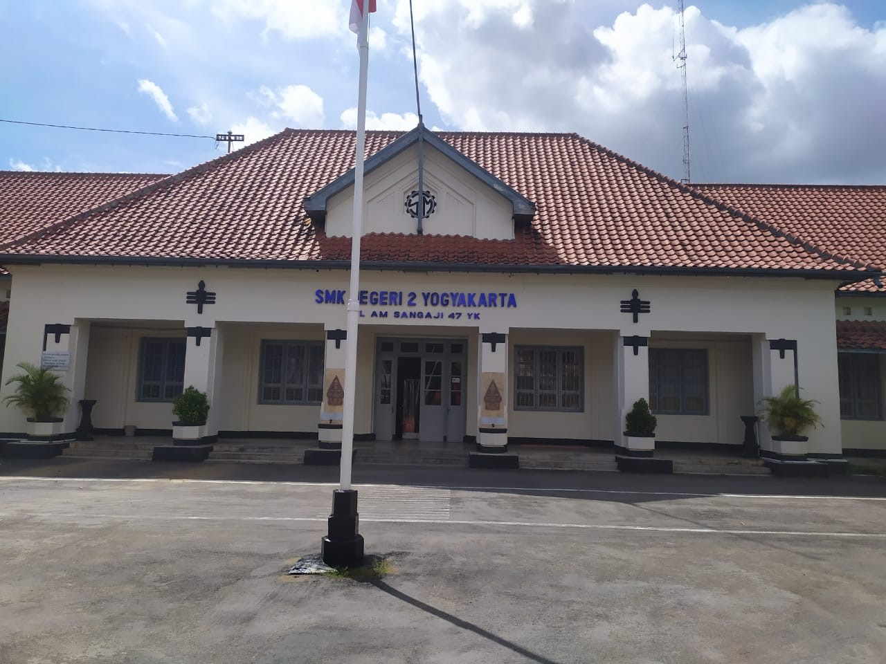

Jurusan Sistem Informatika, Jaringan dan Aplikasi (SIJA) adalah salah satu jurusan unggulan yang fokus pada bidang teknologi informasi dan komunikasi.Jurusan ini menggabungkan pembelajaran tentang pengembangan perangkat lunak (software), pengelolaan jaringan komputer, serta penerapan sistem informasi yang dibutuhkan di dunia industri dan bisnis modern. Kami berkomitmen untuk mencetak lulusan yang tidak hanya memiliki keterampilan teknis yang tinggi, tetapi juga mampu beradaptasi dengan perkembangan teknologi yang sangat pesat saat ini.
Jurusan Sistem Informatika, Jaringan dan Aplikasi (SIJA) merupakan program keahlian di bidang Teknologi Informasi dan Komunikasi (TIK) yang berfokus pada pengembangan keterampilan siswa dalam bidang pemrograman, sistem informasi, dan jaringan komputer. Sejak awal berdiri, jurusan SIJA berkomitmen untuk menciptakan lulusan yang kompeten, profesional, dan siap bersaing di dunia industri dan teknologi yang terus berkembang. Kami menggabungkan teori dengan praktik, pembelajaran di kelas dengan pengalaman langsung di lapangan, serta membangun koneksi yang kuat dengan dunia usaha dan industri.
